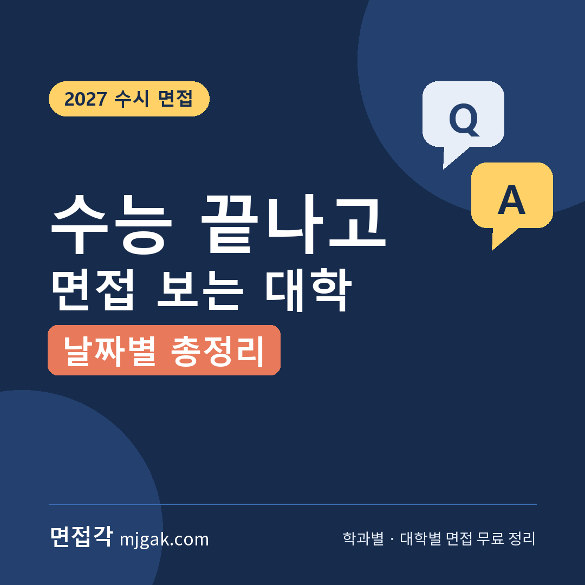
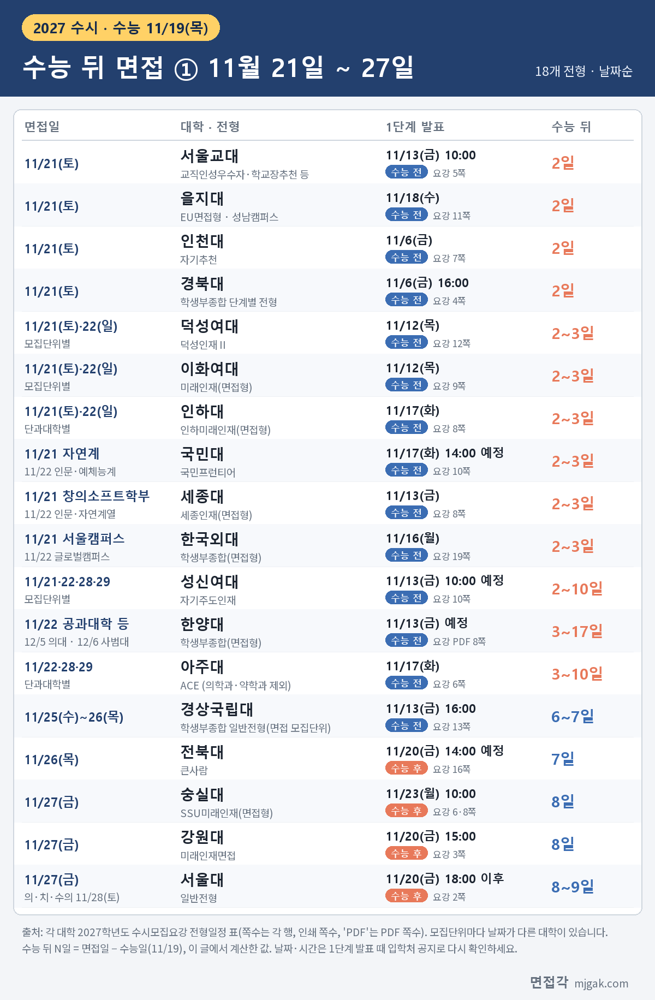
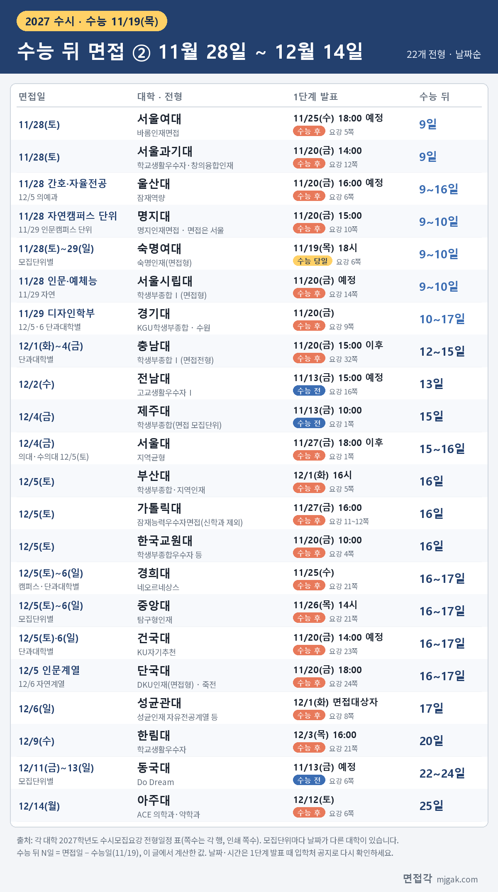
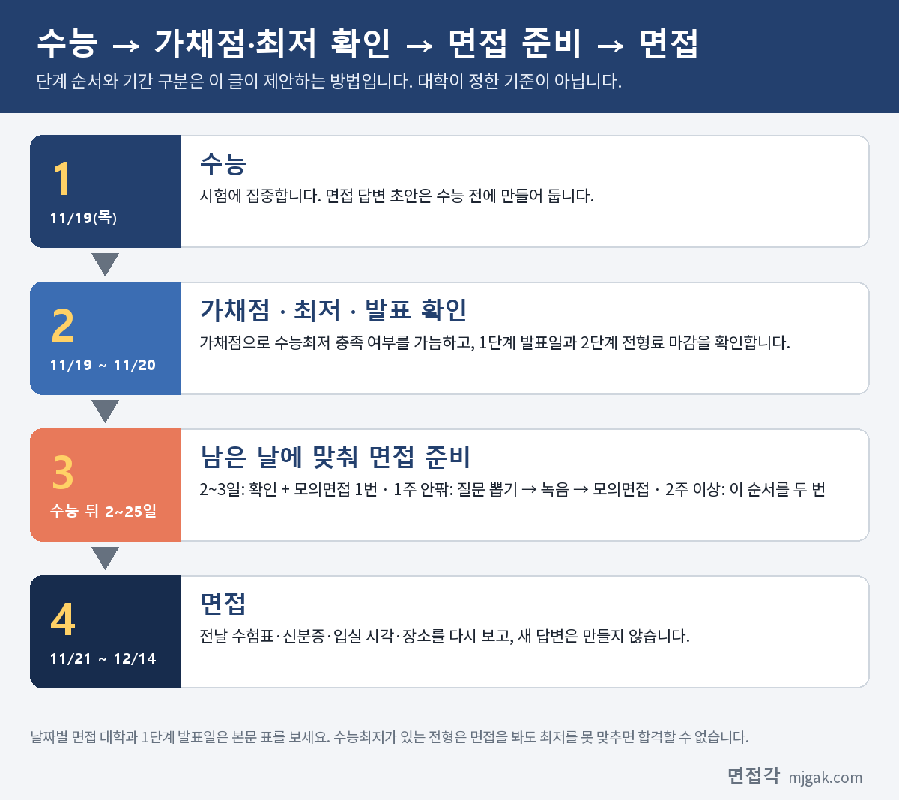

Ctrl+V (서식 유지됨)제목
본문 (이 영역 전체가 복사됩니다)
📷 여기에 이미지 넣기 — 썸네일 — thumb-after.png (대표 이미지로 지정)
2027학년도 수능은 2026년 11월 19일(목)입니다. 수능이 끝난 뒤에 수시 면접을 보는 대학도 여럿입니다. 그런데 수능 뒤 면접은 날짜에 따라 준비할 수 있는 시간이 크게 다릅니다. 수능 이틀 뒤에 면접을 보는 대학이 있고, 3주 넘게 뒤에 보는 대학도 있습니다. 1단계 발표가 수능 전에 나오는 대학이 있고, 수능 다음 날 나오는 대학도 있습니다. 이 글은 38개 대학의 2027학년도 수시모집요강 전형일정 표를 직접 확인해, 수능 다음 날(11월 20일)부터 12월 17일까지 면접이 있는 대학과 전형을 날짜순으로 정리했습니다. 날짜마다 1단계 발표일이 수능 전인지 후인지, 수능 뒤 면접까지 며칠이 남는지(이 글에서 계산한 값)도 함께 적었고, 남는 기간에 맞춘 준비 순서를 제안합니다. 수시 원서를 쓴 고3과 재수생, 일정을 함께 챙기는 학부모님이 읽으시면 됩니다.
1. 수능 뒤 면접, 날짜별로 보면
아래 두 표는 면접일 순서입니다. "수능 뒤 N일"은 면접일에서 수능일(11월 19일)을 뺀 값으로, 이 글에서 계산한 값입니다. 예를 들어 11월 21일(토) 면접은 2일이고, 수능과 면접 사이에 비어 있는 날은 11월 20일(금) 하루뿐입니다.
📷 여기에 이미지 넣기 — 이미지 1 — after-table-1.png
📷 여기에 이미지 넣기 — 이미지 2 — after-table-2.png
같은 대학이라도 모집단위(학과·계열·단과대학)에 따라 면접일이 다른 곳이 많습니다. 표에 "모집단위별", "단과대학별"이라고 적은 대학은 내 모집단위가 어느 날인지 모집요강 원문이나 1단계 발표 공지에서 꼭 확인하세요. 이 글에서 확인한 대학 중 11월 20일(금)에 면접을 보는 곳은 없었습니다.
2. 11월 21일(토)·22일(일): 수능 이틀·사흘 뒤
수능 뒤 첫 주말입니다. 11월 21일(토) 하루에 서울교대(1단계 11/13), 을지대 EU면접형(11/18, 성남캠퍼스), 인천대 자기추천(11/6), 경북대 학생부종합 단계별 전형(11/6)이 면접을 봅니다. 덕성여대 덕성인재Ⅱ, 이화여대 미래인재(면접형), 인하대 인하미래인재(면접형)는 21일과 22일에 모집단위별로 나뉩니다. 국민대 국민프런티어는 자연계 21일, 인문계·예체능계 22일이고, 세종대 세종인재(면접형)는 창의소프트학부 21일, 인문·자연계열 22일, 한국외대 학생부종합(면접형)은 서울캠퍼스 모집단위 21일, 글로벌캠퍼스 모집단위 22일입니다. 성신여대 자기주도인재는 11월 21·22·28·29일 중 모집단위별로 정해집니다.
11월 22일(일)에는 한양대 학생부종합(면접형) 공과대학·한양인터칼리지학부(자연)와 아주대 ACE 공과대학·첨단ICT융합대학이 면접을 봅니다. 한양대 의과대학은 12월 5일(토), 사범대학은 12월 6일(일)이고, 아주대는 다른 단과대학이 11월 28일·29일입니다.
이 날짜의 대학들은 1단계 발표가 모두 수능 전(11월 6일~18일)입니다. 발표를 보고 나서 준비를 시작하면 수능 공부와 겹칩니다.
3. 11월 25일(수)~27일(금): 수능 뒤 1주 안팎
경상국립대 학생부종합 일반전형은 면접이 있는 모집단위(사회과학대학 일부 학과, 사범·수의과·의과·간호·약학대학)가 11월 25일(수)~26일(목)에 면접을 보고, 1단계는 11월 13일(금) 16시 발표입니다. 전북대 큰사람은 11월 26일(목), 숭실대 SSU미래인재(면접형)와 강원대 미래인재면접은 11월 27일(금)입니다. 서울대 일반전형(음악대학 제외)은 11월 27일(금)에 면접을 보고, 수의과대학·의과대학·치의학대학원 치의학과만 11월 28일(토)입니다. 평일 면접이 많으니 학교 일정도 미리 맞춰 두세요.
4. 11월 28일(토)·29일(일): 수능 뒤 9~10일
이 주말에는 서울여대 바롬인재면접, 서울과기대 학교생활우수자·창의융합인재, 울산대 잠재역량 간호학과·자율전공학부가 11월 28일에 면접을 봅니다. 명지대 명지인재면접은 자연캠퍼스 모집단위가 28일, 인문캠퍼스 모집단위가 29일이고, 면접은 모두 인문캠퍼스(서울)에서 봅니다(10쪽). 숙명여대 숙명인재(면접형)는 28~29일 중 모집단위별, 서울시립대 학생부종합전형Ⅰ(면접형)은 인문·예체능계열 28일, 자연계열 29일입니다. 경기대 KGU학생부종합은 디자인학부만 11월 29일이고, 나머지 단과대학은 12월 5일·6일이며 모두 수원캠퍼스에서 봅니다(9쪽).
5. 12월 1일(화)~6일(일): 수능 뒤 12~17일
충남대 학생부종합Ⅰ(면접전형)은 12월 1일부터 4일까지 단과대학별로 나뉩니다. 전남대 고교생활우수자Ⅰ은 12월 2일(수), 제주대 학생부종합은 12월 4일(금), 서울대 지역균형전형은 12월 4일(금)이고 의과대학·수의과대학만 12월 5일(토)입니다.
이 글의 12월 면접 대학은 12월 5일(토)·6일(일)에 가장 많이 몰립니다. 부산대 학생부종합·지역인재, 가톨릭대 잠재능력우수자면접(신학과 제외), 한국교원대, 울산대 의예과가 5일이고, 경희대 네오르네상스, 중앙대 탐구형인재, 건국대 KU자기추천은 이틀에 걸쳐 단과대학·모집단위별로 나뉩니다. 단국대(죽전) DKU인재(면접형)는 인문계열 5일, 자연계열 6일입니다. 성균관대 성균인재 자유전공계열·글로벌AI융합학부·의예과는 12월 6일(일)입니다.
6. 12월 9일(수)~14일(월): 수능 뒤 20~25일
한림대 학교생활우수자는 12월 9일(수), 동국대 Do Dream은 12월 11일(금)~13일(일) 모집단위별 지정일, 아주대 ACE 의학과·약학과는 12월 14일(월)입니다.
7. 1단계 발표, 수능 전인가 후인가
수능 전 발표(17곳): 서울교대, 을지대, 인천대, 경북대, 덕성여대, 이화여대, 인하대, 국민대, 세종대, 한국외대, 성신여대, 한양대, 아주대(의학과·약학과 제외), 경상국립대, 전남대, 제주대, 동국대. 동국대는 1단계 발표 뒤 2단계 전형료를 11월 16일(월) 16시까지 내야 합니다(6쪽). 면접이 12월이라도 이 날짜는 수능 전입니다.
수능 당일 발표: 숙명여대는 11월 19일(목) 18시에 1단계를 발표하고, 2단계 전형료를 다음 날 11월 20일(금) 17시까지 받습니다(6쪽).
수능 다음 날 11월 20일(금) 발표: 전북대, 강원대, 서울대 일반전형, 서울과기대, 울산대, 명지대, 서울시립대, 경기대, 충남대, 한국교원대, 건국대, 단국대까지 12곳입니다. 서울대 일반전형은 2단계 전형료를 11월 23일(월) 10시~24일(화) 18시에(2쪽), 건국대는 11월 23일(월) 14시까지(23쪽) 내야 합니다.
그 뒤 발표: 숭실대 11/23, 서울여대·경희대 11/25, 중앙대 11/26, 가톨릭대·서울대 지역균형 11/27, 부산대·성균관대 12/1, 한림대 12/3, 아주대 의학과·약학과 12/12입니다. 서울대 지역균형은 2단계 전형료를 11월 30일(월) 10시~12월 1일(화) 18시에 냅니다(1쪽). 성균관대는 요강에 "대상자/시험장 발표"로 적혀 있고, 1단계 학생부평가로 면접대상자를 뽑습니다(8·28쪽). 수능 뒤에 발표하는 곳 중 발표부터 면접까지 짧은 곳은 아주대 의학과·약학과 2일(12/12 → 12/14), 서울여대 3일(11/25 → 11/28), 숭실대·부산대 4일(11/23 → 11/27, 12/1 → 12/5), 성균관대 5일(12/1 → 12/6)입니다(모두 이 글에서 계산한 값).
8. 수능 뒤 남는 기간별 준비법 (이 글이 제안하는 방법)
아래 순서와 기간 구분은 이 글이 제안하는 연습 방법이고, 대학이 정한 기준이 아닙니다.
📷 여기에 이미지 넣기 — 도식 — after-flow.png
수능 당일 저녁부터 다음 날까지는 확인부터 합니다. 가채점으로 내 등급을 가늠하고, 지원한 전형에 수능최저가 있는지 봅니다. 수능최저가 있는 전형은 면접을 잘 봐도 최저를 맞추지 못하면 합격할 수 없으니, 최저 충족이 어려워 보이면 준비 순서를 다시 정하는 것이 현실적입니다. 그다음 1단계 발표일, 2단계 전형료 마감, 면접 시간·장소 공지일을 한 장에 적습니다. 수능 시간표와 가채점, 성적 통지일은 면접각 수능 페이지(mjgak.com/suneung/)에, 면접 전형의 수능최저는 수능최저 모아보기(mjgak.com/minimum/)에 대학별로 모아 두었습니다.
수능 뒤 2~3일(11월 21일·22일 면접): 21일 면접은 11월 20일(금) 하루, 22일 면접도 20·21일 이틀뿐입니다. 그래서 학생부 다시 읽기, 예상 질문 뽑기, 1분 답변 녹음은 수능 전에 끝내 두기를 권합니다. 11월 20일에는 새 답변을 만들지 말고 모의면접 한 번, 수험표·신분증·장소 확인만 하세요.
수능 뒤 6~10일(11월 25일~29일 면접): 1단계 발표가 수능 뒤라면 발표 당일에 확인을 끝내고, 이틀은 질문 뽑기와 녹음, 이틀은 모의면접과 꼬리질문, 전날은 쉬는 순서가 무난합니다. 숭실대·서울여대처럼 발표 후 3~4일이면 질문 뽑기와 녹음은 발표 전에 해 두세요.
수능 뒤 12~25일(12월 면접): 시간이 있는 편이지만 수능 직후 며칠은 집중이 어려울 수 있습니다. 수능 뒤 첫 주는 학생부 다시 읽기와 질문 목록 정리, 둘째 주부터 녹음과 모의면접을 하고, 면접 1주 전에 같은 순서를 한 번 더 돌리면 됩니다. 부산대·성균관대·한림대·아주대 의학과·약학과처럼 면접 직전에 발표하는 곳은 발표 전에 준비를 끝내 두세요.
📷 여기에 이미지 넣기 — 이미지 3 — 제미나이 생성: 창밖에 단풍이 보이는 늦가을 스터디 카페에서 친구에게 모의면접을 받으며 자신 있게 답하는 학생, 탁상 달력·스톱워치·녹음 중인 휴대폰(실사) / "제미나이 프롬프트 1"
(AI로 만든 이미지로, 실제와 다를 수 있습니다)
9. 수능 뒤 면접 자주 묻는 것들
Q. 지원한 대학이 표에 없어요.
A. 이 글은 직접 모집요강을 확인한 38개 대학만 담았습니다. 지원 대학 수시모집요강의 "전형일정" 표에서 1단계 발표일과 면접일을 찾을 수 있습니다.
Q. 내 모집단위 면접일은 어떻게 아나요?
A. 모집단위별로 날짜가 나뉘는 대학은 모집요강 전형일정 표에 단과대학·계열별 날짜가 있습니다. 개인별 시간과 장소는 대학마다 1단계 발표 때나 면접 며칠 전에 입학처 홈페이지에 공지하니, 지원 대학 요강에서 공지 날짜를 확인하세요.
Q. 수능을 못 봤다고 느껴지면 면접을 포기해야 하나요?
A. 가채점은 추정치입니다. 수능최저가 없는 전형은 수능 등급과 관계없이 1단계 결과에 따라 면접을 보게 되니, 결과를 미리 단정하지 말고 일정대로 준비하세요.
Q. 2단계 전형료를 따로 내야 하나요?
A. 이 글의 대학 중 서울대, 건국대, 숙명여대, 동국대는 1단계 합격 뒤 2단계 전형료 납부 기간이 따로 있습니다. 숙명여대는 미납부 시 2단계 시험 응시가 불가하고 불합격 처리되며(8쪽), 건국대는 기한 내 미납부 시 2단계 응시자격을 잃습니다(23쪽).
10. 수능 뒤 면접 체크리스트
□ 지원한 대학의 1단계 발표일과 면접일을 달력에 적었다
□ 내 모집단위가 어느 날 면접인지 확인했다
□ 1단계 발표가 수능 전인 대학은 수능 전에 답변 초안을 끝냈다
□ 2단계 전형료 마감이 있는 대학을 확인했다
□ 수능최저가 있는 전형을 표시해 두었다
□ 면접 장소가 모집단위 캠퍼스와 다른 대학이 있는지 확인했다
□ 같은 날 겹치는 면접이 있는지 보고, 겹치면 어디를 볼지 정했다
11. 대학별 면접 글 이어 보기
이 글의 표에 넣은 대학 중 면접 방식과 예상 질문을 따로 정리한 대학입니다.
▷ 이화여대 미래인재전형 면접형 면접 총정리 (11월 21일·22일)
▷ 세종대 세종인재(면접형) 면접 총정리 (11월 21일·22일)
▷ 한국외대 학생부종합전형(면접형) 면접 총정리 (11월 21일·22일)
▷ 인하대 인하미래인재 면접 총정리 (11월 21일·22일)
▷ 국민대 국민프런티어 면접 총정리 (11월 21일·22일)
▷ 성신여대 자기주도인재 면접 총정리 (11월 21·22일, 28·29일)
▷ 아주대 ACE전형 면접 총정리 (11월 22·28·29일, 의학과·약학과 12월 14일)
▷ 서울여대 바롬인재면접전형 면접 총정리 (11월 28일)
▷ 서울과기대 학교생활우수자 면접 총정리 (11월 28일)
▷ 명지대 명지인재면접전형 면접 총정리 (11월 28일·29일)
▷ 숙명여대 숙명인재 면접 총정리 (11월 28일·29일)
▷ 서울시립대 학생부종합전형Ⅰ(면접형) 면접 총정리 (11월 28일·29일)
▷ 부산대 학생부종합전형·지역인재전형 면접 총정리 (12월 5일)
▷ 경희대 네오르네상스 면접 총정리 (12월 5일·6일)
▷ 중앙대 탐구형인재 면접 총정리 (12월 5일·6일)
▷ 건국대 KU자기추천 면접 총정리 (12월 5일·6일)
▷ 단국대 DKU인재(면접형) 면접 총정리 (12월 5일·6일)
▷ 동국대 Do Dream전형 면접 총정리 (12월 11일~13일)
12. 함께 보면 좋은 글
수능이 끝난 뒤의 면접 준비는 남은 날짜를 세는 데서 시작합니다. 내 면접일과 1단계 발표일을 먼저 적고, 남은 날에 맞춰 할 일을 나누세요.
※ 이 글의 날짜는 서울교육대학교, 을지대학교, 인천대학교, 경북대학교, 덕성여자대학교, 이화여자대학교, 인하대학교, 국민대학교, 세종대학교, 한국외국어대학교, 성신여자대학교, 한양대학교, 아주대학교, 경상국립대학교, 전북대학교, 숭실대학교, 강원대학교, 서울대학교, 서울여자대학교, 서울과학기술대학교, 울산대학교, 명지대학교, 숙명여자대학교, 서울시립대학교, 경기대학교, 충남대학교, 전남대학교, 제주대학교, 부산대학교, 가톨릭대학교, 한국교원대학교, 경희대학교, 중앙대학교, 건국대학교, 단국대학교, 성균관대학교, 한림대학교, 동국대학교의 2027학년도 수시모집요강에서 인용했습니다. 괄호 안 쪽수는 각 모집요강에 인쇄된 쪽수입니다. "수능 뒤 N일"과 발표부터 면접까지의 일수는 이 글에서 계산한 값입니다. 날짜와 시간은 바뀔 수 있으니 지원 대학 입학처 공지를 꼭 확인하세요.
면접각 "내 면접 일정표"에서 지원한 대학과 전형을 고르면 1단계 발표일과 면접일을 날짜순으로 보여 주고, 같은 날 겹치는 면접을 표시합니다. 회원가입 없이 바로 쓸 수 있고, 대학별 면접 정리와 60초 타이머 모의 면접도 함께 볼 수 있습니다.
태그 (#은 에디터가 자동으로 붙이므로 그대로 붙여 넣어도 됩니다)
넣을 이미지 목록 (docs/promo/img 폴더)




제미나이 프롬프트 1 — 창밖에 단풍이 보이는 늦가을 스터디 카페에서 친구에게 모의면접을 받으며 자신 있게 답하는 학생, 탁상 달력·스톱워치·녹음 중인 휴대폰(실사) (4:3) — 제미나이에 그대로 붙여 넣어 이미지를 만드세요